BackIO es la capa de gestión de cuenta y backlog operativo de Geeks. Reemplaza a Monday como tablero de requerimientos y como cara hacia el cliente, y se apoya en Basecamp como sistema de ejecución del equipo. No sustituye a Basecamp: lo organiza.
| PrometIO | CRM comercial. Cuando una cotización se aprueba, la empresa aparece como cliente en BackIO y la cotización como borrador de proyecto. |
| BackIO | Dónde se decide qué se hace, para quién, cuándo y quién lo lleva. Dónde viven el daily, el weekly, las señales, los indicadores y el portal del cliente. |
| Basecamp | Dónde el equipo produce: cada proyecto de BackIO es una lista de to-dos en el proyecto Basecamp del cliente; cada bloque es un grupo; cada requerimiento es un to-do. Los comentarios y archivos se quedan en Basecamp. |
| Mesas | Orión y Omega. Cada cliente pertenece a una mesa. El daily, el weekly y el informe mensual se publican en el proyecto Basecamp de la mesa. |
BackIO <no-reply@crm.geeks.com.ec> con el botón para definir tu contraseña. El enlace vence en 24 horas; si venció, pide que te lo reenvíen ("reenviar" junto a tu invitación).Un correo @geeks.com.ec sin invitación previa también puede entrar, pero lo hace como colaborador. Para tener otro rol hace falta la invitación.
En la pantalla de entrada pulsa ¿Olvidaste tu contraseña?, escribe tu correo y recibirás un enlace para definir una nueva (vence en 24 horas). Por seguridad la pantalla responde igual exista o no el correo. Si no llega, revisa spam o pide a un administrador que te reenvíe el acceso desde Admin → Usuarios.
| Rol | Quién | Puede | No puede |
|---|---|---|---|
| admin | Luis | Todo, incluida la sección Admin | — |
| operaciones | Marcia | Todo lo operativo: backlog, proyectos, weekly, daily, informes, publicar en Basecamp | Admin (clientes, mesas, plantillas, usuarios, API keys) |
| ejecutiva lider gerencia | Cuentas, líderes de mesa, gerencia | Lo mismo que operaciones | Admin |
| colaborador | Equipo de producción | Ver todo el backlog, proyectos, daily y weekly. En sus tareas: cambiar estado, fecha de entrega (con motivo), entregables, registrar y cerrar reprocesos | Crear proyectos, generar o publicar documentos, editar tareas ajenas, título, prioridad, responsables, visibilidad |
Tu rol aparece junto a tu correo al pie del panel lateral. Los botones que no te corresponden no se muestran, y el servidor rechaza la acción aunque alguien la fuerce.
El panel lateral izquierdo se puede plegar con «. Cuando está plegado quedan solo los iconos.
| Sección | Para qué | Quién la usa a diario |
|---|---|---|
| Dashboard | Salud de la operación: KPIs, clientes, personas, últimas 8 semanas, arrastre | Operaciones, gerencia, líderes |
| Backlog | Todos los requerimientos, editables en línea. Tabla estilo Monday o Kanban | Todos |
| Proyectos | Lista y detalle de proyectos, portal del cliente, avance | Ejecutivas, operaciones |
| Daily | Las tres señales del día y la publicación de apertura y cierre | Quien lleva la mesa |
| Weekly | Señales, acuerdos, plan operativo, acta de cierre, causas pendientes | Marcia |
| Huérfanos | To-dos creados a mano en Basecamp | Operaciones |
| Informes | Informe ejecutivo mensual por mesa | Marcia, gerencia |
| Admin | Clientes, mesas, plantillas, recurrencias, tipos de pieza, usuarios, integraciones, API keys | Solo admin |
Azul acción principal · Verde confirmar o publicar apertura · Rojo publicar cierre o acciones delicadas · Gris acciones secundarias · ✨ lo redacta la IA y tú lo revisas antes de publicar.
Se puede ver toda la agencia o una mesa. Todo lo que muestra sale de los datos del backlog y de las horas de Basecamp; no hay nada cargado a mano.
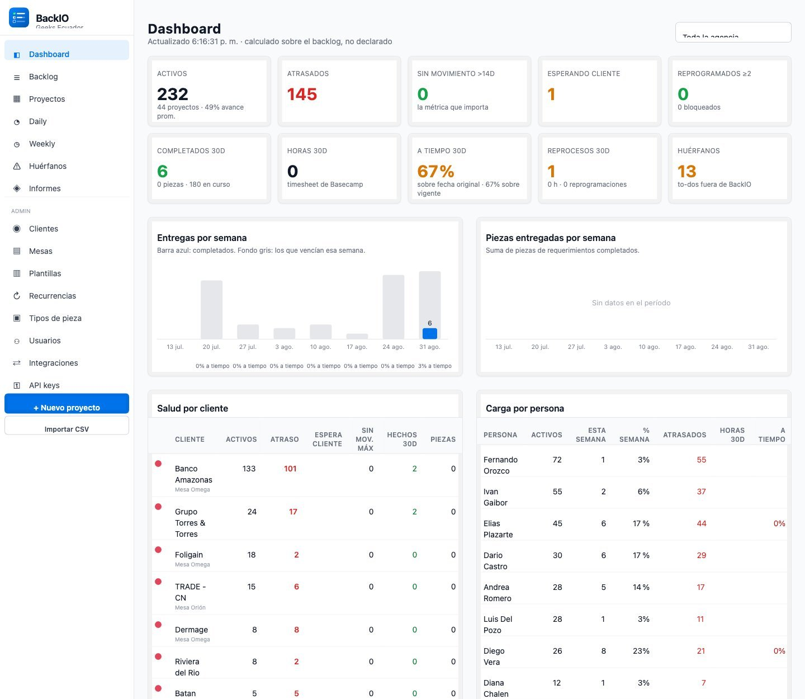
| KPI | Qué mide |
|---|---|
| Activos / Atrasados | Requerimientos no completados; atrasados = fecha de entrega ya pasó |
| Sin movimiento 14d | Tareas que nadie tocó en dos semanas. Es la columna que más importa: detecta tableros muertos |
| Esperando cliente / Bloqueados | Con aprobación "Pendiente cliente" / con estado "Bloqueado" |
| Completados 30d | Entregas del último mes, con piezas |
| Horas 30d | Horas registradas en el timesheet de Basecamp |
| A tiempo 30d | Porcentaje entregado antes de la fecha original comprometida. Debajo, el porcentaje sobre la fecha vigente |
| Reprocesos 30d | Entregables que volvieron al equipo, con las horas que costaron |
| Huérfanos | To-dos creados fuera de BackIO pendientes de adoptar |
Cada cliente aparece en verde, amarillo o rojo. Rojo: más de 2 atrasados, o más de 14 días sin movimiento, o algo con más de 30 días de atraso. Amarillo: algún atraso o más de 7 días sin movimiento. Además: horas del mes, valor cotizado activo y la relación USD por hora, porcentaje a tiempo y reprocesos.
Tareas activas, cuántas vencen esta semana y qué porcentaje del total de la semana carga cada persona, atrasados, horas, porcentaje a tiempo sobre fecha original, desvío mediano en días, reprogramaciones atribuibles al equipo y reprocesos. Al pasar el cursor por las dos últimas columnas se ve la causa dominante.
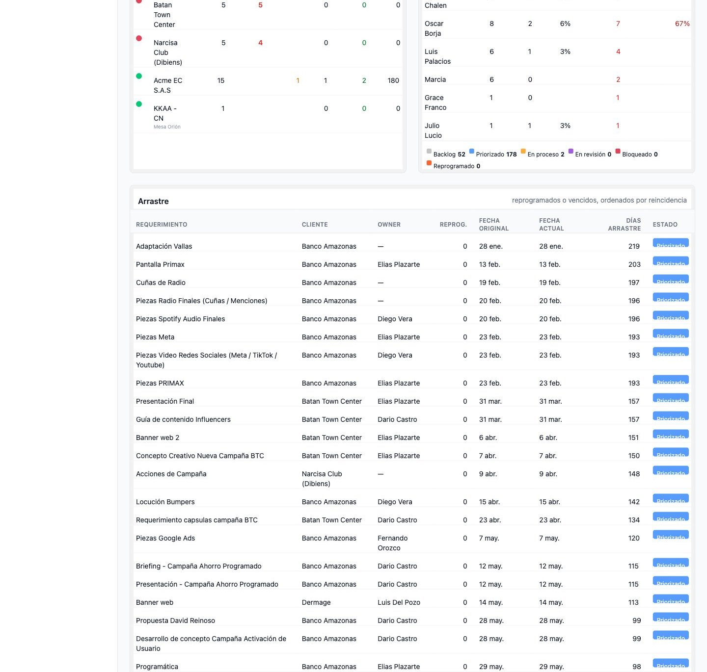
Tareas reprogramadas o atrasadas, ordenadas por veces reprogramadas y días acumulados desde la fecha original. Es la lista que se discute en el weekly.
Todos los requerimientos activos, agrupados por cliente, con edición en línea: haces clic en una celda, cambias y se guarda solo. Arriba a la derecha se alterna entre Tabla y Kanban (columnas por estado; arrastrar una tarjeta cambia el estado).
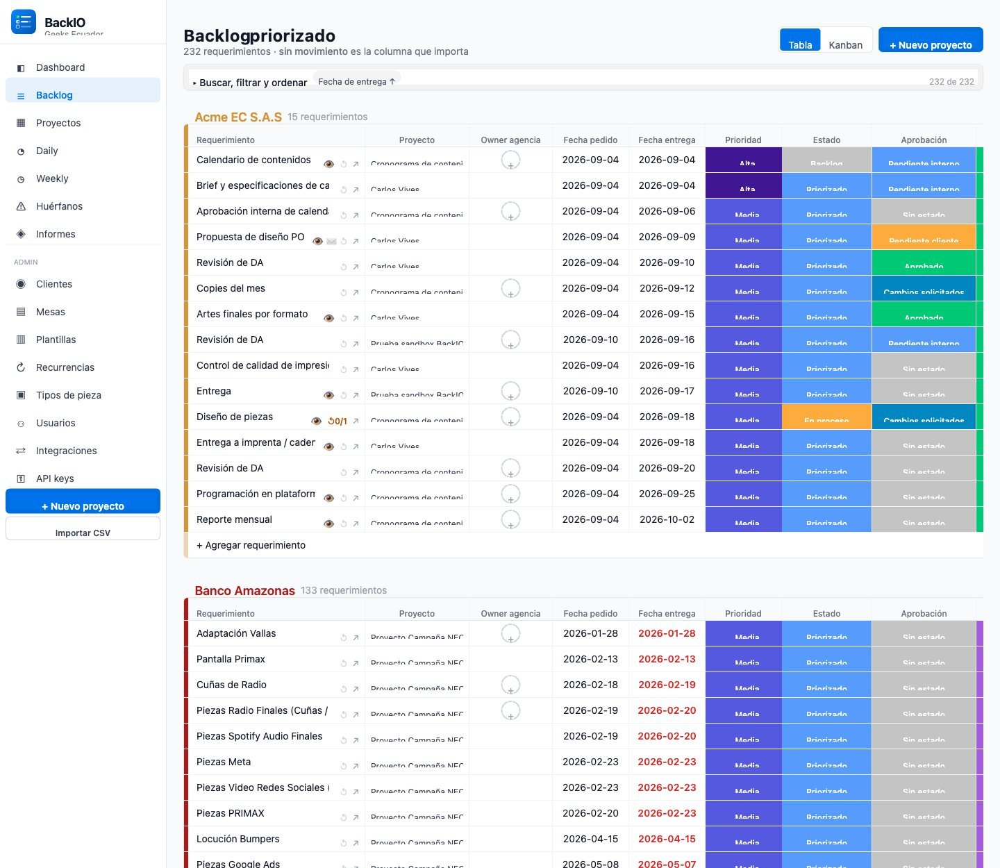
El panel arranca plegado. Al abrirlo: filtro por mesa, cliente, persona, estado, proyecto, búsqueda por texto y la casilla "Solo activos". Debajo, "Ordenar por" con doce criterios y atajos de un clic: Más atrasados, Más tiempo sin mover, Próximos a vencer, Prioridad alta primero. Aunque el panel esté cerrado, la cabecera muestra chips con lo que está aplicado y "N de M".
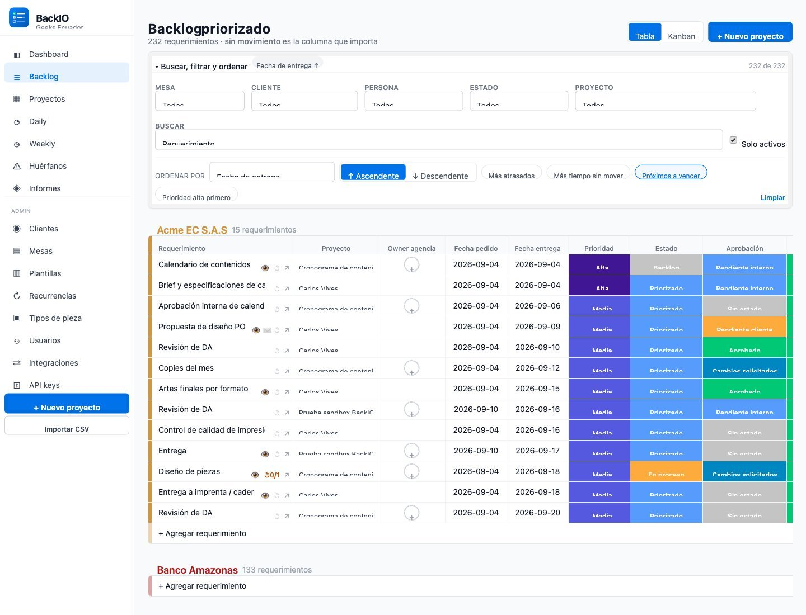
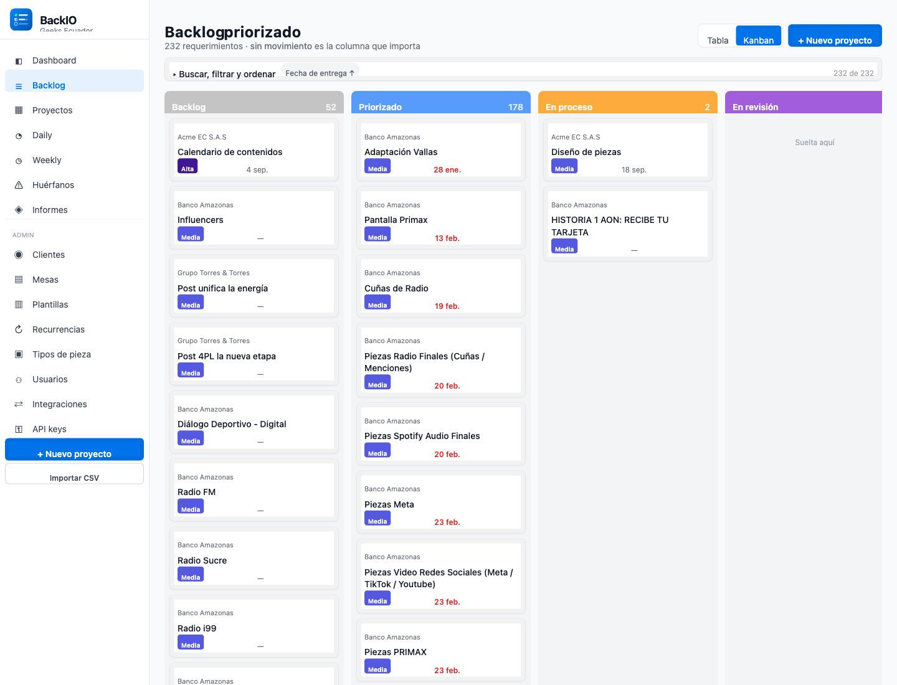
| Columna | Qué es y cómo se edita |
|---|---|
| Requerimiento | Título interno (clic para editar). Iconos: 👁 el cliente lo ve · ✉ redactar recordatorio al cliente (solo si espera al cliente o está bloqueado) · ↺ historial de reprogramaciones y reprocesos · ↗ ir al proyecto |
| Proyecto | Proyecto al que pertenece, con enlace. Al pasar el cursor se ve el bloque |
| Owner agencia | Responsables (avatares). Clic para asignar o quitar |
| Fecha pedido / Fecha entrega | Selector de fecha. Cambiar la fecha de entrega pide motivo (capítulo 7). En rojo si está vencida; ↺N indica cuántas veces se reprogramó |
| Prioridad | Alta, Media, Baja |
| Estado | Backlog · Priorizado · En proceso · En revisión · Reprogramado · Bloqueado · Completado · Cancelado. "Completado" está deshabilitado si la tarea tiene to-do en Basecamp: se marca allá |
| Aprobación | Sin estado · Pendiente interno · Pendiente cliente · Aprobado · Cambios solicitados. Pasar a "Cambios solicitados" registra un reproceso del cliente |
| Tipo | FEE (recurrente) o Proyecto (campaña) |
| Atraso / Sin mov. | Días de atraso sobre la fecha vigente · días desde el último cambio |
| Horas | Horas registradas en Basecamp para ese to-do (90 días) |
| Basecamp / Última act. | Enlace al to-do · hace cuánto se tocó |
Al final de cada cliente, la fila + Agregar requerimiento crea una tarea suelta (sin proyecto) escribiendo el título y pulsando Enter. Para trabajo con estructura usa el Builder.
La fecha que se compromete en la apertura de mesa nunca se pierde. Cada requerimiento guarda su fecha original y cuenta cuántas veces se movió. Así el indicador de cumplimiento mide contra lo prometido, no contra la última fecha.
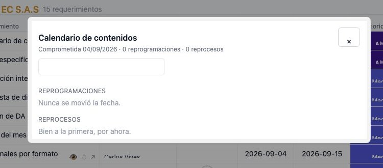
| Motivo | Se atribuye a | Efecto en indicadores |
|---|---|---|
| Insumos o aprobación del cliente | Cliente | No descuenta al equipo |
| Cambio de alcance | Cliente | No descuenta al equipo |
| Capacidad del equipo | Equipo | Cuenta como reprogramación del equipo |
| Error de estimación | Equipo | Cuenta como reprogramación del equipo |
| Reproceso | Equipo | Cuenta como reprogramación del equipo |
| Prioridad de negocio / Otro | Neutro | No se atribuye |
Con 2 o más reprogramaciones la tarea sale como señal crítica "arrastre reincidente" en el weekly: se hace, se reasigna o se mata. Si una fecha se cambió por API o por un agente sin motivo, aparece en el weekly como "causa pendiente" para completarla con un clic.
Un reproceso es un entregable que regresa al equipo para corrección. Se registra la causa y el paso al que vuelve, nunca el comentario.
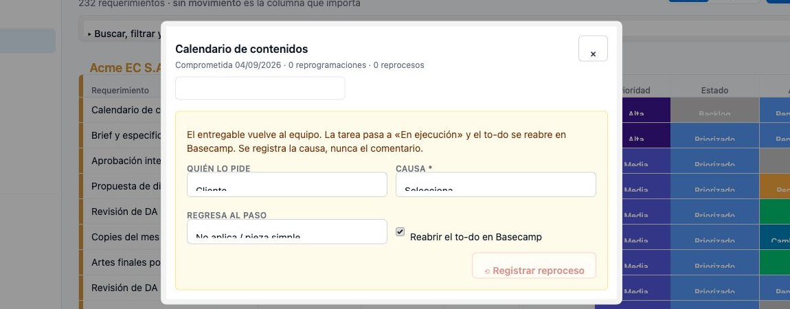
También se registra sin pulsar nada: al poner la aprobación en "Cambios solicitados", al reabrir una tarea completada, o cuando alguien desmarca un to-do terminado en Basecamp (queda "sin causa" hasta que la mesa la complete).
| Causa | Responsable natural |
|---|---|
| Brief incompleto o ambiguo | Ejecutiva |
| Error de ejecución | Equipo |
| Cambio de opinión del cliente | Cliente |
| Ajuste de marca o legal | Cliente |
| Dirección de arte | Líder |
| Error de texto | Equipo |
Con 2 o más reprocesos en la misma tarea salta la señal crítica "reproceso reincidente": revisar brief y control de calidad antes de enviar.
Un proyecto agrupa requerimientos de un cliente con un objetivo y una fecha: un fee mensual ("Cronograma de contenido - Octubre 2026") o una campaña. En Basecamp es una lista de to-dos.
Tarjetas o lista, con búsqueda y filtros por cliente, mesa, ejecutiva, estado y portal. "Solo activos" viene marcado. Orden por entrega, inicio, avance, nombre, cliente, estado o actualización, con atajos "Próximos a entregar", "Menos avanzados", "Recién actualizados". Las entregas vencidas salen en rojo.
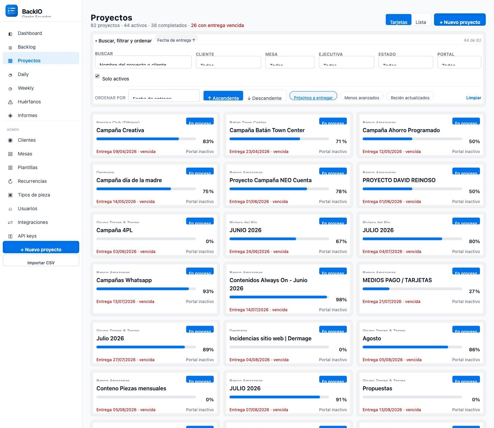
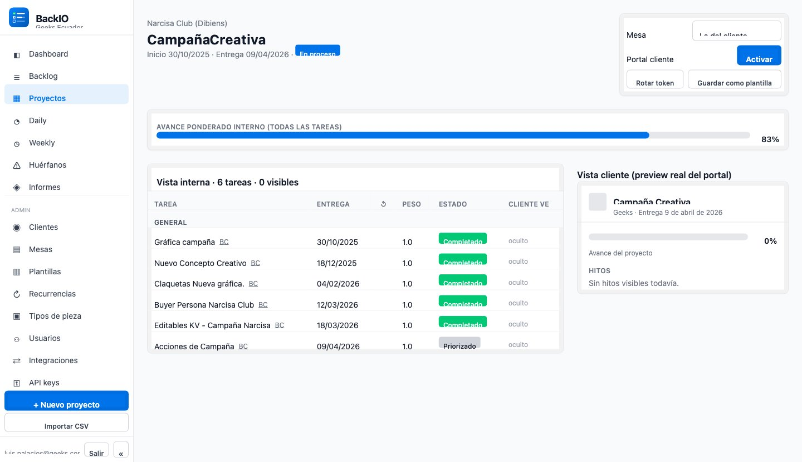
Botón + Nuevo proyecto. Si dejaste uno a medias, te ofrece continuar o descartar. Si hay cotizaciones aprobadas en PrometIO, aparecen arriba como borradores listos para usar.
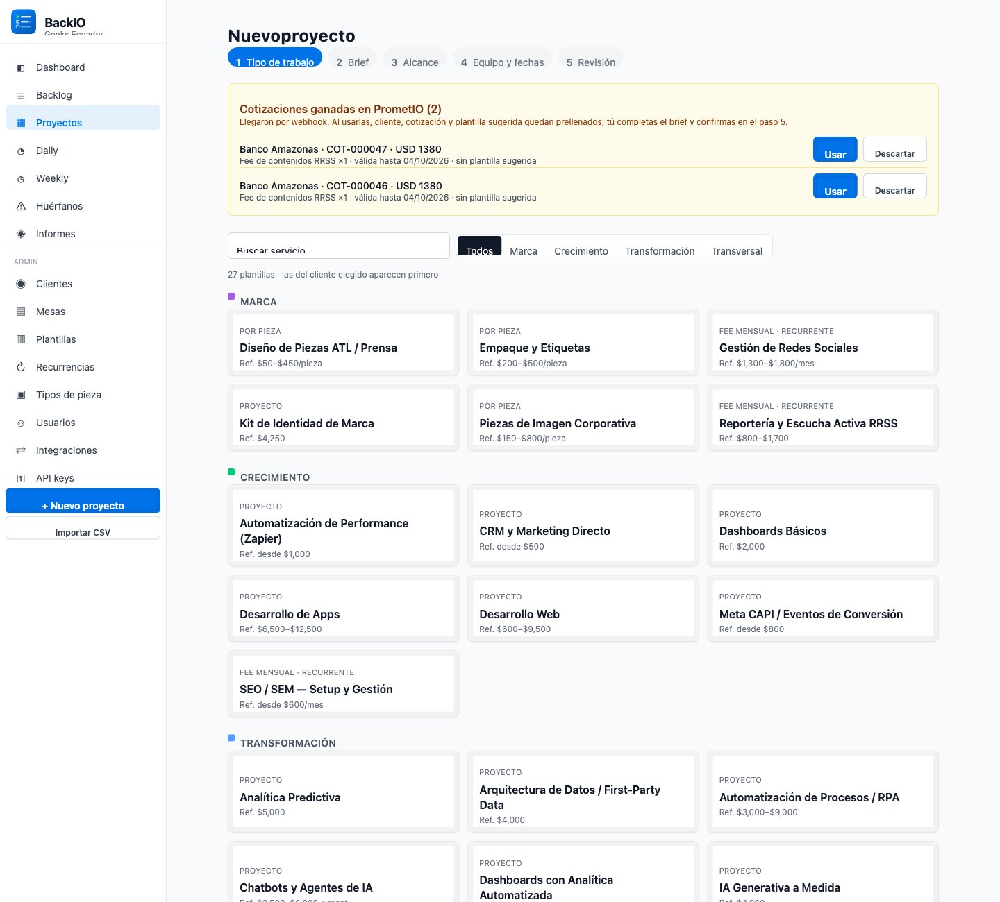
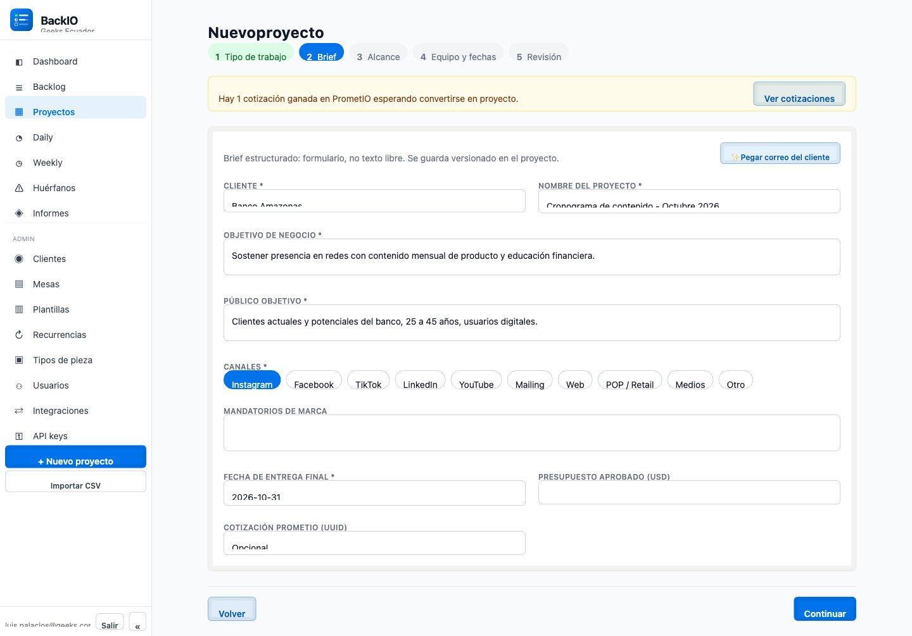
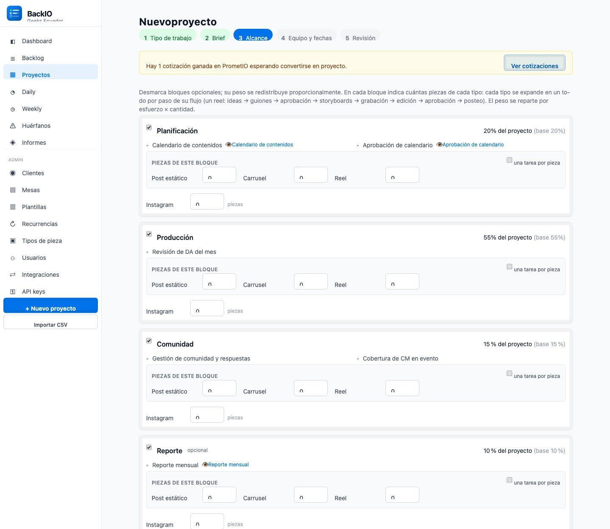
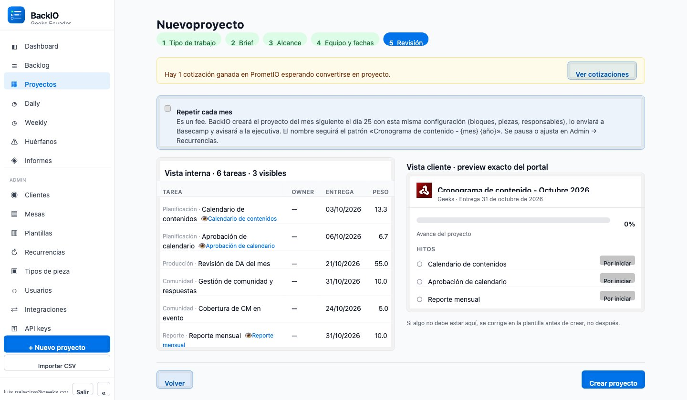
Un fee se configura una sola vez. Después, BackIO crea el mes siguiente solo.
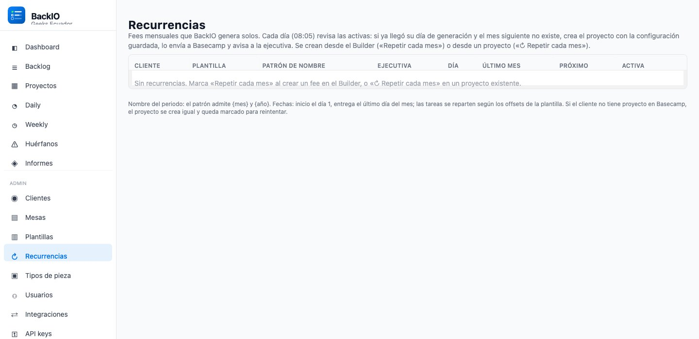
En Admin → Recurrencias se ve cada una: cliente, plantilla, patrón de nombre (editable), ejecutiva, día, último mes generado con enlace, próximo periodo y si está pendiente. Se puede pausar, cambiar el día y Generar ahora sin esperar al 25. Un periodo nunca se genera dos veces.
El daily no prioriza: desbloquea. Una sola pantalla, sin scroll, con tres columnas:
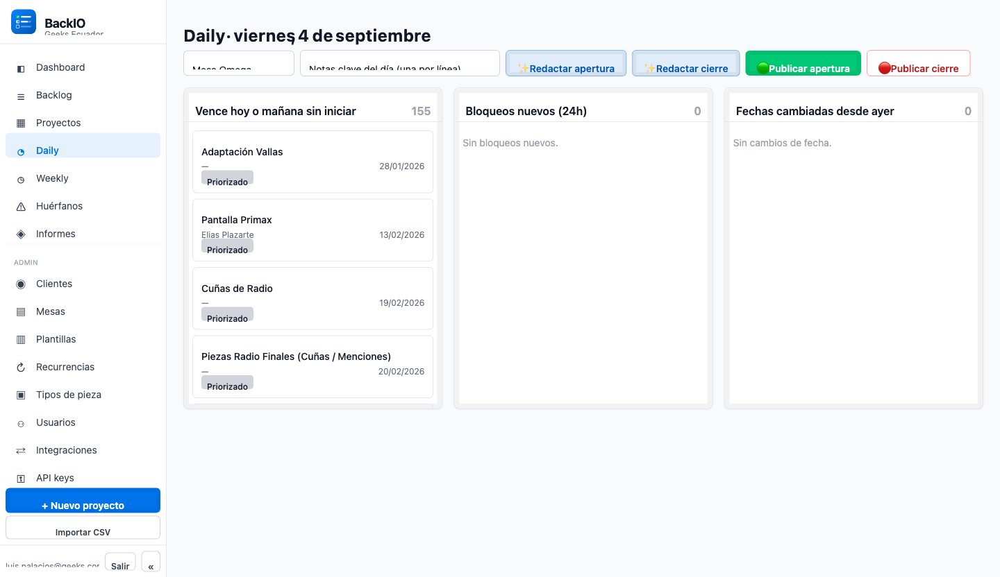
El mensaje llega al board Daily de la mesa con el formato de siempre (responsable, hora, notas, vence, bloqueos, cambios). Cada tarea sale con el cliente en negrita, el título enlazado al to-do, el responsable, la fecha y los días de atraso en rojo. Si usaste la IA, se firma "Redactado por BackIO, publicado por [tu nombre]".
El weekly es de Marcia. La agenda no se escribe: la genera el motor de señales el domingo a las 18:00 (llega por correo) y se puede recalcular en cualquier momento con ↻ Recalcular señales.
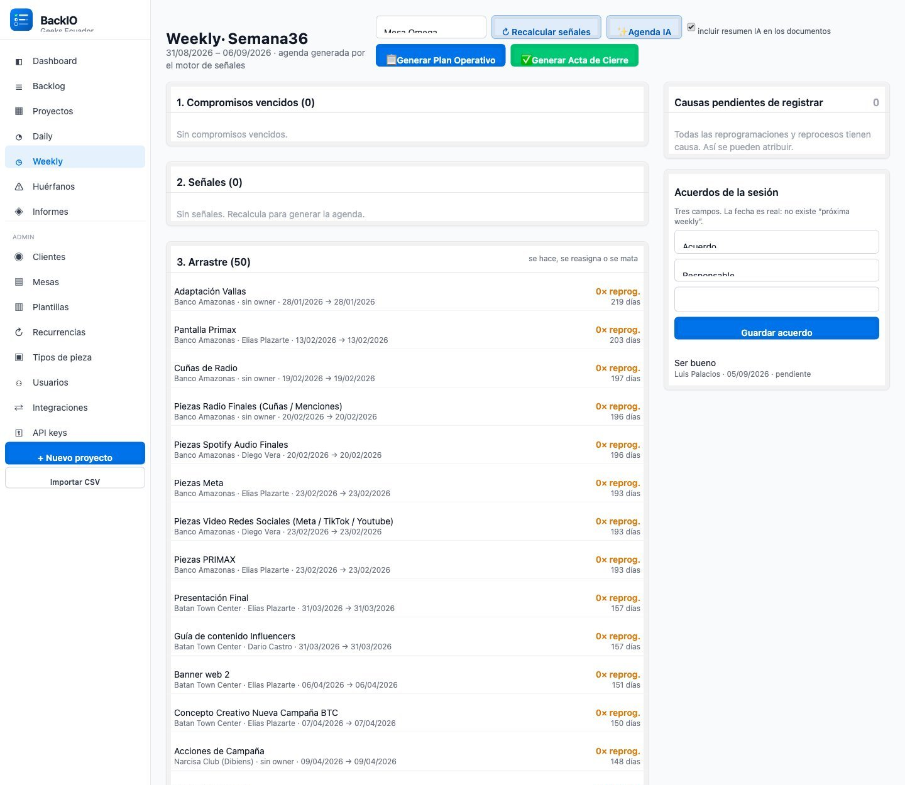
| Señal | Cuándo salta | Severidad | Tema de agenda |
|---|---|---|---|
| Compromiso vencido | Acuerdo del weekly con fecha pasada | Crítica | Rendición de cuentas |
| Arrastre reincidente | 2 o más reprogramaciones | Crítica | Se hace, se reasigna o se mata |
| Reproceso reincidente | 2 o más reprocesos | Crítica | Revisar brief y control de calidad |
| Atraso crítico | Más de 30 días de atraso | Crítica | Decisión inmediata |
| Bloqueo por cliente | Más de 5 días esperando al cliente | Alta | Escalar con la ejecutiva |
| Sobrecarga proyectada / Concentración de carga | Una persona con más del 30 % de la semana o por encima de su capacidad | Alta | Redistribuir |
| Sin movimiento | Más de 14 días sin tocar | Media | Revivir o cerrar |
| Cuenta silenciosa | Cliente sin entregas ni actividad en 14 días | Media | Contacto proactivo |
| Reprogramación / reproceso sin causa | Cambio sin motivo registrado | Media | Completar la causa |
Cada acuerdo lleva descripción, responsable y fecha de compromiso real (mínimo mañana). Se cierran como cumplidos o cancelados. Los vencidos encabezan la siguiente agenda.
Elige la mesa. 📋 Generar Plan Operativo (lunes: pendientes anteriores, capacidad, prioridades, riesgos) y ✅ Generar Acta de Cierre (viernes: resultado, arrastre, señales, acuerdos). Con la casilla "incluir resumen IA" el documento arranca con un resumen ejecutivo y la agenda por causa. Publicar en Basecamp lo deja como mensaje en el board Weekly de la mesa con el título de siempre ("dd/mm/aaaa || Status Semanal Operativo - Semana N").
Status semanal en prosa (qué se entregó, qué se arrastra y por qué, dónde está la presión) y la agenda agrupada por causa: dependencias del cliente, ejecución y arrastre, capacidad, relación con cuentas, calidad y reprocesos, compromisos. Cada grupo trae una pregunta de decisión concreta para resolver en la reunión.
Panel a la derecha con las reprogramaciones y reprocesos sin causa. Se completan con un desplegable, sin salir del weekly.
Cada 30 minutos BackIO revisa los proyectos Basecamp de los clientes importados y detecta to-dos que no pasaron por BackIO. Operaciones recibe un correo.
En la pantalla se ve cliente, título, quién lo creó, fecha y antigüedad, y arriba un resumen de cuántos huérfanos creó cada persona. Dos acciones: Adoptar (crea el requerimiento en BackIO enlazado al to-do, dentro del proyecto de su lista si existe) o Ignorar. ↻ Revisar Basecamp ahora fuerza la revisión.
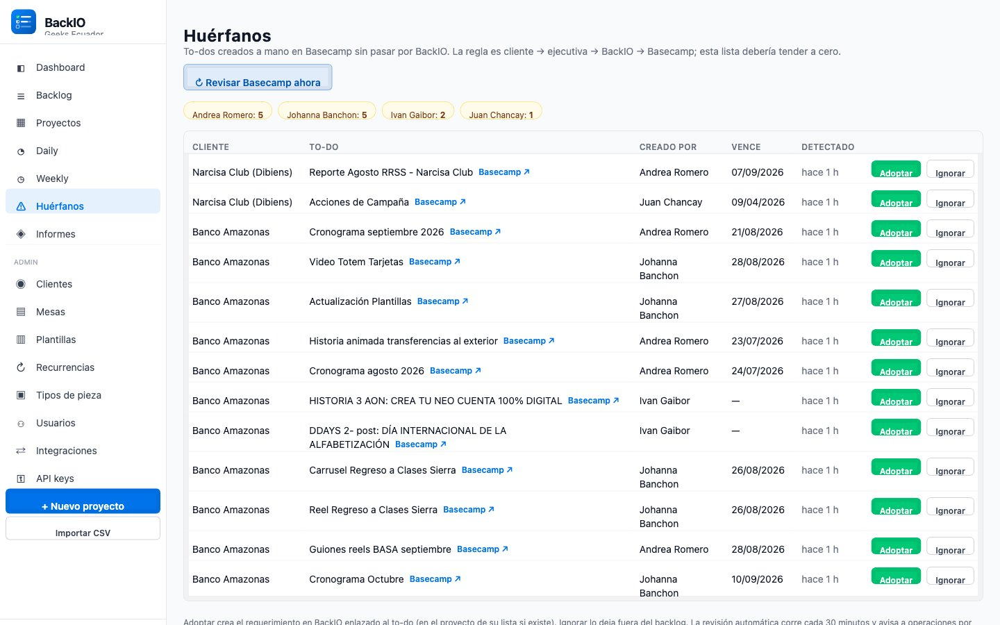
Informe ejecutivo por mesa. El día 1 de cada mes a las 08:00, BackIO redacta el del mes anterior para cada mesa y avisa por correo. También se genera a mano: mesa, mes y ✨ Generar informe.
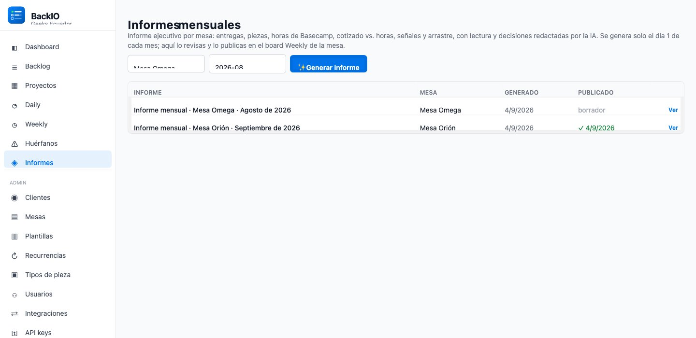
Contiene: entregas y piezas, porcentaje a tiempo sobre fecha original y sobre fecha vigente, reprogramaciones con la causa principal, reprocesos con horas, horas totales, abiertos y atrasados al cierre, señales críticas; la sección "Lectura del mes" y "Lo que hay que decidir" redactadas por la IA; y las tablas por cliente (incluido cotizado vs. horas, USD por hora) y por persona.
Se revisa en pantalla, se copia o se publica en el board Weekly de la mesa con Publicar en Basecamp. Queda guardado en la lista con su estado (borrador o publicado).
Cada proyecto tiene un enlace de portal (token largo) que se activa desde el detalle del proyecto. Opcionalmente, el cliente puede tener un PIN de hasta 6 dígitos (Admin → Clientes) que se pide al abrirlo.
Nunca ve: títulos internos, responsables, pesos, prioridades, comentarios, ni nada de Basecamp. La misma función que filtra el portal es la que genera la "vista cliente" del detalle del proyecto y del paso 5 del Builder, así que lo que ves ahí es lo que verá el cliente.
| Dirección | Qué | Cuándo |
|---|---|---|
| BackIO → Basecamp | Lista por proyecto, grupo por bloque, to-do por requerimiento (título, fecha, asignados, "avisar al completar" a la ejecutiva), cambios de fecha, reapertura por reproceso, mensajes de daily, weekly e informe | Al crear el proyecto, al reprogramar, al registrar reproceso, al publicar |
| Basecamp → BackIO | Completado sí/no y cuándo, fecha, asignados; horas del timesheet (número, fecha, persona); títulos de to-dos al importar o detectar huérfanos | Webhook en segundos; reconciliación cada 30 min; horas cada 6 h |
| Nunca | Comentarios, descripciones, adjuntos, texto de las entradas de timesheet | — |
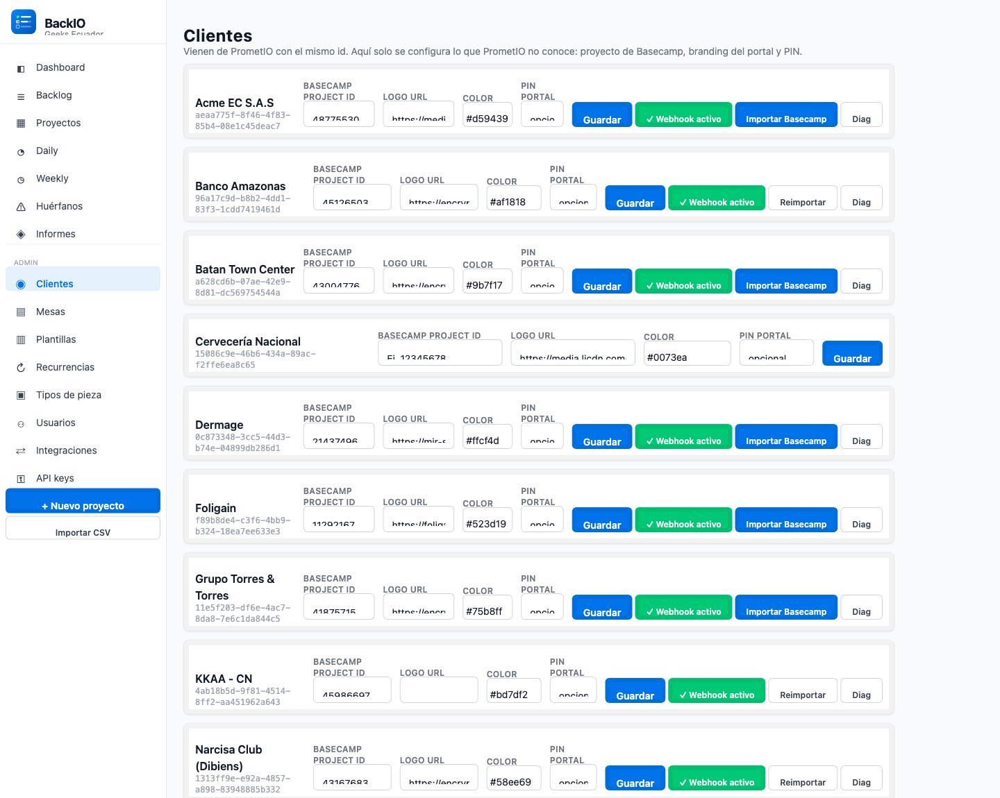
El estado de la conexión y el secreto compartido se ven en Admin → Integraciones. Los intentos rechazados quedan en auditoría.
Principio: la IA redacta, nunca publica. Siempre hay una persona que revisa y pulsa. Todo texto generado va firmado "Redactado por BackIO, publicado por [persona]". El modelo solo recibe datos estructurados de BackIO (títulos, estados, fechas, números); como el texto de Basecamp nunca entra a BackIO, no puede llegar al modelo.
| Botón | Dónde | Qué hace |
|---|---|---|
| ✨ Redactar apertura / cierre | Daily | Mensaje de 3 a 6 líneas con las señales del día, editable antes de publicar |
| ✨ Agenda IA · casilla "incluir resumen IA" | Weekly | Status narrado y agenda por causa con una pregunta de decisión por grupo; antepuesto al plan y al acta si marcas la casilla |
| ✨ Pegar correo del cliente | Builder, paso 2 | Convierte el pedido en brief estructurado, sugiere plantilla, cuenta piezas y lista dudas |
| ✉ Recordatorio | Backlog, filas en espera del cliente | Borrador de correo amable para copiar y enviar desde tu correo. BackIO no escribe al cliente |
| ✨ Generar informe | Informes | Informe ejecutivo mensual por mesa |
| Resumen ejecutivo | Portal del cliente | Tres párrafos con datos visibles al cliente, en caché 6 horas |
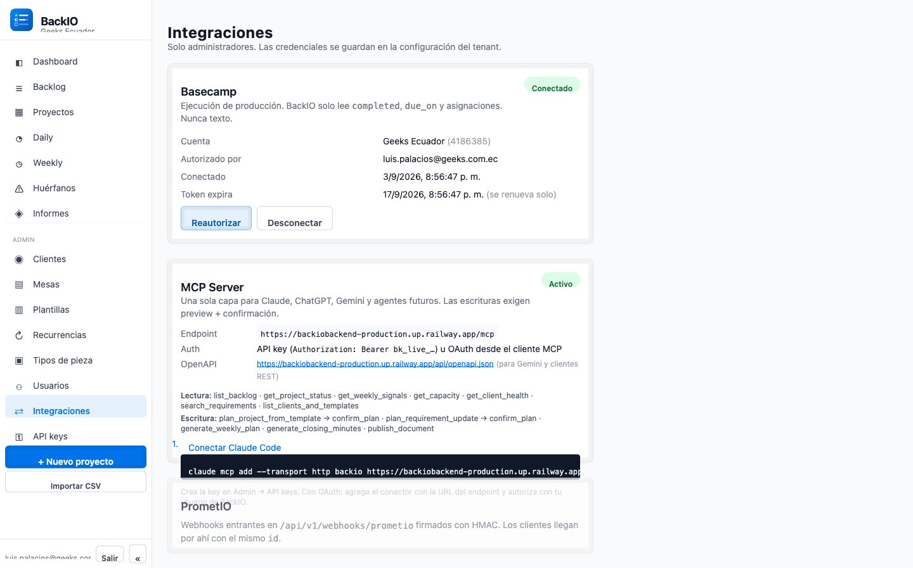
Si los botones ✨ no aparecen, la clave de IA no está configurada en el servidor. Cada generación queda registrada con fecha, tipo y consumo.
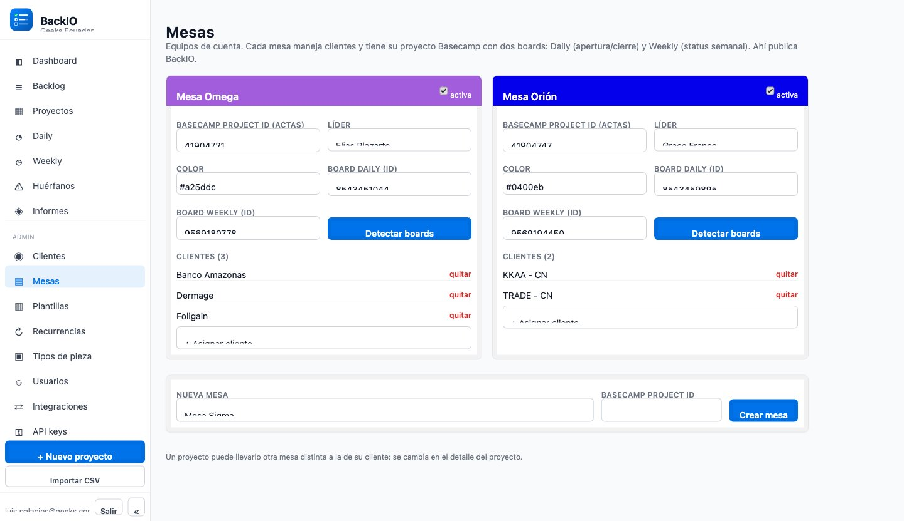
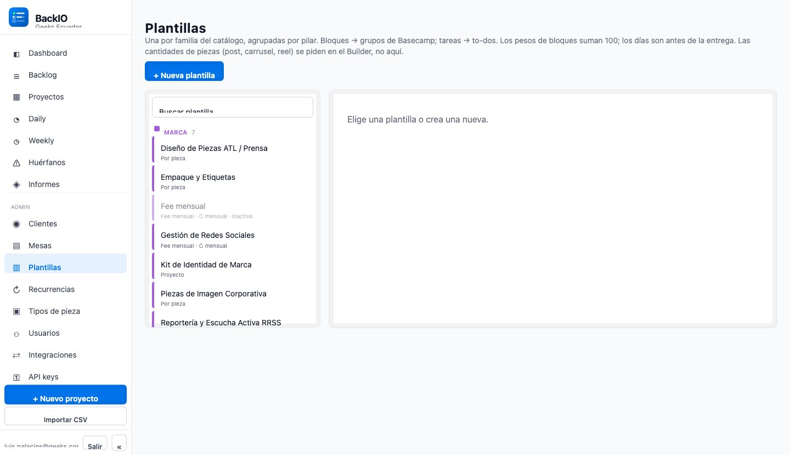
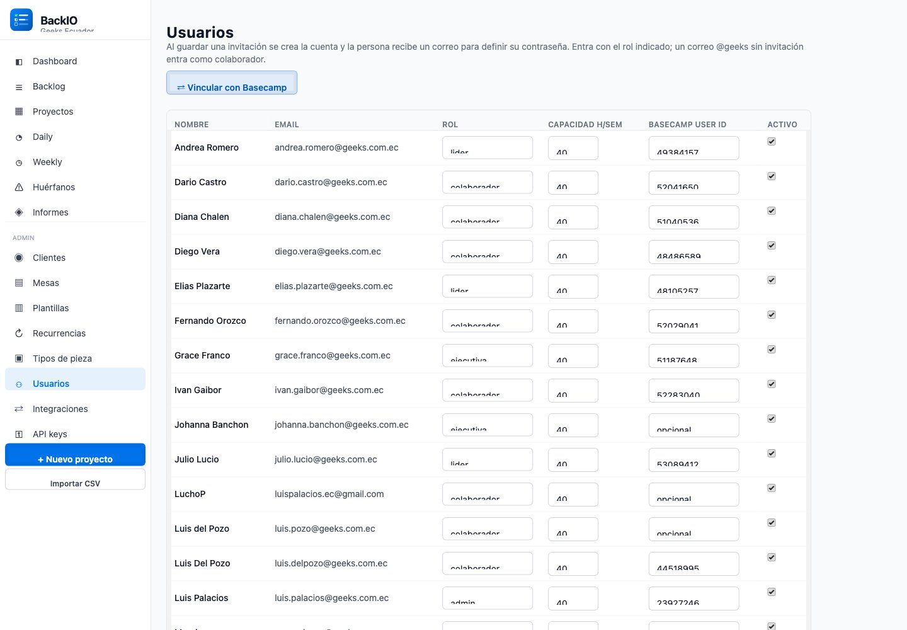
Nombre, mesa, Basecamp project id, logo, color, PIN del portal, activo. Botones: Webhook (registrar y ver entregas), Importar / Reimportar Basecamp.
Orión y Omega: proyecto Basecamp de la mesa, boards Daily y Weekly (Detectar boards los encuentra solos), líder, color y lista de clientes.
Catálogo por pilar y familia: bloques, tareas con offset de días, rol sugerido, peso, etiqueta para cliente y visibilidad. Recurrente y patrón de nombre para fees. Plantillas de un cliente o generales.
Fees mensuales automáticos: pausar, día de generación, patrón de nombre, ejecutiva, generar ahora (capítulo 11).
Post estático (1), carrusel (1.5) y reel (4) con su flujo de pasos. El esfuerzo multiplica el peso.
Dar acceso (invitar con correo y rol), Quitar acceso cuando alguien se va (cierra sesión, bloquea el ingreso, revoca sus claves y reasigna sus tareas a quien elijas) y Restaurar, capacidad semanal, Basecamp user id (manual o con ⇄ Vincular con Basecamp).
Estado de Basecamp (conectar cuenta), MCP Server (URL, OAuth, lista de tools, OpenAPI para Gemini u otros) y PrometIO (webhook).
Salud del sistema: estado y latencia de Railway, Vercel, Supabase, Basecamp, Resend, Anthropic y PrometIO. Lo primero que hay que mirar cuando “algo no funciona”.
Quién hizo qué, desde dónde y cuándo, con filtros por usuario, acción, entidad, origen y fechas, conteo de errores y detalle de cada evento.
Claves para agentes y sistemas con perfiles: gerencial (lectura), ejecutiva, operaciones, prometio, cliente o personalizado. La clave se muestra una sola vez; se puede revocar.
BackIO expone un servidor MCP en /mcp y una API REST documentada en /api/openapi.json. Un asistente (Claude, Gemini u otro) puede consultar el backlog, el estado de un proyecto, las señales, la capacidad, la salud de un cliente, las horas y el status semanal narrado.
Para escribir (crear un proyecto desde plantilla, actualizar un requerimiento, generar plan o acta, publicar) el agente recibe un plan de cambios con un identificador que vence en 15 minutos; solo se ejecuta si una persona confirma con ese identificador. Cambiar una fecha de entrega exige motivo, igual que en la pantalla.
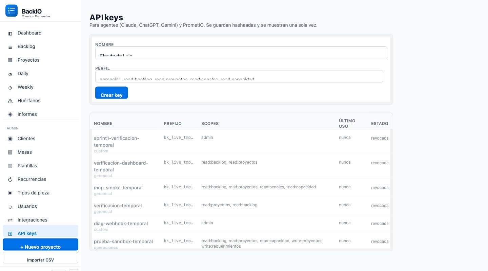
Acceso con API key (Admin → API keys) o con OAuth desde el propio asistente (pantalla de consentimiento de BackIO). Una key con más de 20 escrituras en 5 minutos genera alerta.
| Término | Definición |
|---|---|
| Días sin movimiento | Días desde el último cambio sustantivo de la tarea (estado, fecha, responsable, título). La métrica más importante: detecta tableros muertos |
| Días de atraso | Días desde la fecha de entrega vigente, solo en tareas no completadas |
| Fecha original | La comprometida al crear la tarea. No cambia nunca |
| A tiempo (original) | Completada antes o el día de la fecha original. Es el dato real de tiempos de entrega |
| A tiempo (vigente) | Completada antes o el día de la última fecha acordada. Mide si se cumple lo replanificado |
| Desvío | Mediana de días entre la fecha original y la entrega real, solo en entregas tardías |
| Arrastre | Días entre la fecha original y la vigente, más los días de atraso actuales |
| Reprogramación del equipo | Cambio de fecha con motivo capacidad, error de estimación o reproceso |
| Reproceso | Entregable que vuelve al equipo. Se mide en cantidad, causa y horas |
| Bien a la primera | Entregas sin ningún reproceso |
| Avance ponderado | Suma de pesos completados sobre pesos totales, sin cancelados. En el portal se renormaliza sobre lo visible |
| Peso | Importancia relativa de la tarea. Viene de la plantilla y del esfuerzo del tipo de pieza por cantidad |
| Capacidad semanal | Horas por persona (Admin → Usuarios). Base de la señal de sobrecarga |
| USD por hora | Valor cotizado activo del cliente dividido por sus horas del periodo. Señal de rentabilidad relativa |
| Huérfano | To-do creado en Basecamp sin pasar por BackIO |
| Síntoma | Causa habitual | Qué hacer |
|---|---|---|
| "El enlace no es válido o venció" al definir contraseña | Invitación de más de 24 h | Admin → Usuarios → reenviar. La pantalla muestra el detalle del error si es otra cosa |
| No veo la sección Admin / no puedo generar en Weekly | Tu rol no lo permite | Mira tu rol al pie del panel. Pide el cambio a un admin |
| Un proyecto muestra 0 tareas y 0 % | Abierto en los segundos en que se importaba, o filtro activo | Recarga. Si persiste, revisa Solo activos y filtros |
| No puedo marcar "Completado" | La tarea tiene to-do en Basecamp | Complétala en Basecamp; BackIO se entera en segundos |
| Tareas importadas "sin asignar" | Personas sin Basecamp user id al importar | Admin → Usuarios → Vincular con Basecamp; luego Reimportar en el cliente |
| Al publicar el daily no pasa nada | Versión antigua o error del board | Ahora siempre hay franja de progreso y resultado; si sale roja, lee el motivo (board Daily no configurado, mesa sin proyecto) |
| Proyecto con "⚠ sync Basecamp" | Basecamp falló al crear la lista (límite de 50, sin proyecto Basecamp) | Detalle del proyecto → Reintentar Basecamp |
| No aparecen los botones ✨ | Clave de IA no configurada | Avisar a Luis |
| La cotización aprobada no llegó | Webhook de PrometIO rechazado (secreto) o empresa sin sincronizar | Admin → Integraciones y auditoría; editar y guardar la empresa en PrometIO vuelve a enviarla |
| El filtro de mesa no muestra nada | Los clientes no tienen mesa asignada | Admin → Clientes → mesa |